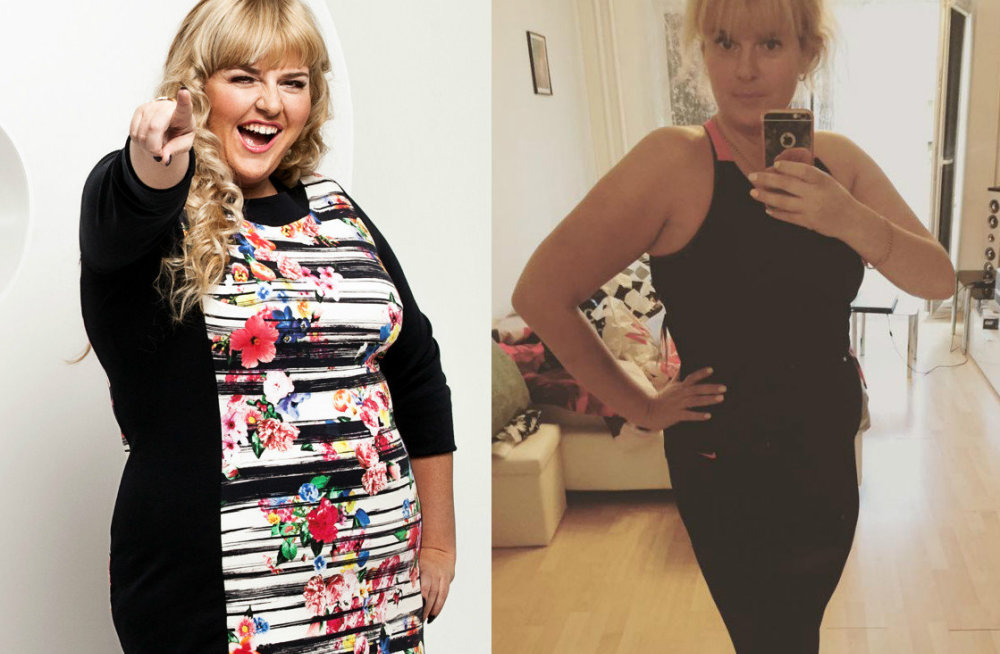

Tere! Ma harva kirjutan, sest total puudus vaba aega. Aga täna on minu sõnum on kaua planeeritud , sellest ajast saadik, kui ma kaalust alla 27 kg.
Pärast minu esimene esinemine avalikkusele uues viisil ei möödu päeva, et inimesed küsisid, kuidas mul õnnestus nii kiiresti ja ei kahjusta tervist kaalust alla võtta. Ja vaata, et vastata kõigile ja korraga — see on sõnum.
Ma ei ole näitleja, nii et ei ole eriti mures on tingitud ülekaalust, mis y mind ilmus pärast lapse sündi. Seni, kuni rasvumine (a see oli juba täpselt rasvumine) ei start avaldada mõju minu tervisele. Ma ei suutnud ilma düspnoe tõusta teisele korrusele, ei saanud joosta koos lastega, paar korda jõuda takistav olukorda seetõttu, et väga higistama, ja see oli palju kaadris. Noh ja mis kõige tähtsam: y mind kasvavad poeg, millist eeskuju ma talle esitama? Sest ema peab olema kõige ilusam!
Ja ma hakkasin otsima kohta, kuidas kaalust alla võtta. Kõigepealt pöördus keskus parandus kaalu, kus mulle ette julm dieeti ja treeningprogrammi võimlas. Ma ausalt üritasin: mind jagus 11 päeva. Sel ajal, kui ma kaalust alla 1,5 kg, Pigem, sest närvid. Ma olen terve päev proovides, kogumi, ja pärast seda oli vaja põgeneda jõusaali, a siis keskööd valmistada mittesöödavad toidu kohta 5 toidukorda. Oli selge, et selline variant on kaalu alandamine ei ole minu jaoks. Pärast seda ma hakkasin otsima programmi koostamine internetis, proovisin piirama ennast toidu... Loomulikult, tulemus ei olnud eriti hea! Ja mulle vahepeal juba kõrini, et ennast näha ekraanil...
Siin on, kuidas ma veel noor naine, tundus üsna hiljuti...
Ja ilmselt ma oleks nii leppima oma kaaluga, kui oleks eelmisel suvel puhkuse ajal koos perega Tallinnas ei kohtas oma vana tuttava Mendi Anna Sepp (star tv ). Me ei ole näinud 10 aastat, ja ma mäletasin seda väga paks 100 kg naine. Ja siis ta lihtsalt nagu pöial-liisi: ilus ja sale! Me ajasime juttu, ja ma ei häbelik küsida, kuidas tal õnnestus nii muuta ja kaalust alla võtta? (Kuigi nüüd ma ise kuulen seda küsimust iga päev)
Loal Inna avaldada oma foto enne ja pärast kehakaalu
Inna ütles mulle, et omal ajal kaalu on viinud teda mitmele hädas tervisega: liigesed, veenilaiendid, probleeme südamega... aga mis kõige tähtsam — ta ei suutnud rasestuda. Ja lõppude lõpuks on iga naise jaoks ei ole oluline, baleriin sa oled või politseinik, see on kõige tähtsam! Lootust ravida viljatust, on see maha uuring eesti haiglasse. Seal selgus, et rasestuda takistab just kaalu, ja et isegi kui see on ime rasestuda, teha lapse ei õnnestu. Ja seal samas kliinikus, pakkus talle proovida hoopis uut tol hetkel vahend kiirendada kaalulangus. Kui olla täpsem, talle ettepaneku võtta vabatahtlik osalemine kliinilistes uuringutes ravimi tema sertifitseerimise Eestis. Ise ravimit eesti, seal ta on sertifitseeritud, nii et oht tervisele on minimaalne, kuid siiski oli... Aga Mendi Anna on nõustunud. Ja nagu ta ise tunnistas mulle, see oli parim, mis õige otsuse oma elus!
-Siin Mendi Anna toimus ravi
Kuidas vabatahtlike, talle andnud ööbimine kohalikus hostelis, igapäevane kontrollimine spetsialistid ja tegelikult, testitavad ravim. See oli vahend, mida tuleb võtta kolm korda päevas. Rahvusvaheline nimi on DIETonus. Ja kõik! Enam ei mingeid piiranguid: ükski dieet ega spordiga, ei massaaži kehakaalu.
Aeg on eksperiment (a see on vaid 28 päeva) Inna kaalust alla 21 kilogrammi! Kui haiglast kliinikud, talle esitati pakendi Dietonus, arvutatakse veel üks kursus (mille eest ta on valatud veel 15 kg) ja soovitusi. Juba 2 kuud Inna rasedaks, ja nüüd y-tema imeline poeg, aga nüüd ei ole sellest...
Pärast kohtumist Mendi Anna ma otsustasin ka proovida seda ravimit, isegi kui peate tellima tema Eestist!
Tõstsin kõik oma tuttavad arstid Tallinn — selgus, et see on vahend, et kaalulangus on juba Eestis ammu möödas sertifitseeritud, ja müüakse läbi e-poe ametlik esindus. Ma olen elus palju näinud, mispärast inimene ei ole eriti usaldav, nii et pärast tellimuse vormistamist, otsustasin ise sõita pea esindused. Noh lihtsalt, et vaadata läbi kõik dokumendid, tõendid, protokollid uuringuid.
Isegi võttis pakendi keemilise analüüsi era meditsiinilabori. Kõik oli puhas.
"Me hoolega läbi koosseisu vahendid kehakaalu DIETonus, ja ei saa väita, et see on 100% ohutu ja võib-olla kõige tõhusam täna vahend kaalu langetamiseks. Osa kehtivate ainete valitud seetõttu, et organism ise hakkab taaskasutada mitmeaastased rasvavarud, muundama nende energia. Seega, sa ei ole ainult kaalust, kuid tunned tuju ja annab jõudu."
Mulle soovitama kaks 16-päevane kursus iganädalane lõhkuda (see on sellepärast, et oli vaja viska rohkem kui 20 kg, kui ülekaalu sul 10-15 kilogrammi, siis piisab ja ühe kursuse). Võtsin vahend iga päev kolm korda, kapslid erineva koosseisu hommikul, päeval ja õhtul. Ma lihtsalt juua klaasi vett. Ja ma jätkas oma tavapärast elu: mees, poeg, maja, esinemised, proovid. Toitumine ennast kuidagi piirama, sõin kõik sama, mis valmistas perele.
Juba nädala pärast märkasin, et riided mulle võõras ripub. Ma sain kaalud: selgus, et nädal kulus 8 kg! Veel nädal esinemas tuli kiiresti tellida ülikonna 2 suurus väiksem. On tõesti naljakas, et kuu lõpuks tuli see uuesti õmmelda! Abikaasa isegi saatis mind arsti juurde, kartsin, et ma haigestusin alates ülepinge tööl, ei uskunud, et on võimalik nii kiire kaalulangus alates mingi imerohi ja ilma dieedi. Kuid minu tervisega kõik oli korras, arst kinnitas!
-Ise ei saa rõõmustada oma uus pilt!
Vahe nende vahel foto -25,5 kg ja kogu elu!
Üldiselt võtsin DIETonus 30 päeva (või õigemini esimese 15 päeva siis nädal pausi ja siis veel poolteist nädalat) ja see aeg oli juba 25,5 kg ja 3-4 suurusega riideid! Esimese kursuse ma kaalust alla 13 kg ja teine — veel 12,5. Ja uskuge, mitte kunagi, sest kogu aeg tervisejooksul ei olnud, ei ole midagi, et spordisaalis! Poeg nüüd ütleb, et ma olen muutunud nagu ei ema, a vanem õde. Nalja nii :) Kui ma ilmus esimest korda pärast pausi eetrisse, siis oli võimatu mitte märgata, et ma kaalust alla. Ajakirjanikud märganud, tegid komplimente. Ja pluss pidev tulv küsimusi naised, tuttavad ja võõrad. Seega jagan teiega oma saladus ja sait esinduse DIETonus Eestis. Ravim võib julgelt tellida SIIN, testitud, isiklikult minuga! Ja pidage meeles, tüdrukud, ei ole kunagi liiga hilja mõtlema o ise, oma välimust ja tervist. Jumal armastab neid, kes armastab ennast. Õnne sulle ja palju õnne!
Tähelepanu!
On olemas juhtumeid võltsinguid ravimi DIETonus, mis ei ole raviomadusi! Nii et ma spetsiaalselt oma lugejaid paigutatud nuppu tellimuse vahendid DIETonuskaugusel ainus ametlik tarnija. Teete selleks siin, siis on tagatud, et saada kvaliteetset toodet parima hinnaga - vaid 1 EURO eest! Lihtsalt vajutage nuppu ja siis tuleb ametlikul kodulehel, kus on võimalik teha tellimuse.